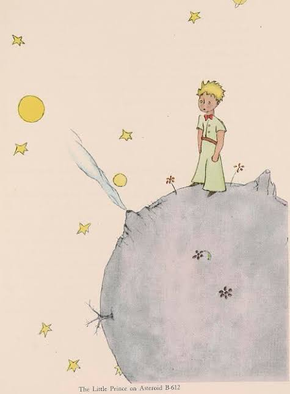

Años después, el narrador, ya convertido en aviador, sufrió una avería en el desierto del Sahara. Allí conoció a un pequeño niño de cabello dorado que venía de otro mundo: el Principito.
El Principito vivía en un planeta diminuto, apenas más grande que una casa, llamado el asteroide B 612. En él había tres volcanes, dos activos y uno apagado, que limpiaba cada mañana con mucho cuidado.
Su rutina diaria en el asteroide era sencilla pero importante:
Un día, confundido por los caprichos de su rosa, decidió partir y viajar por otros planetas en busca de respuestas.
← Página anterior | Siguiente página →
Página 2 de 3